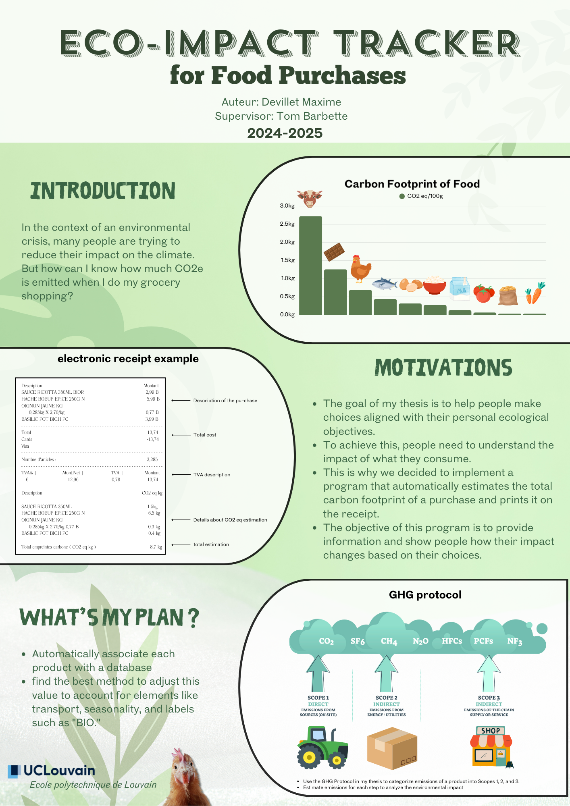
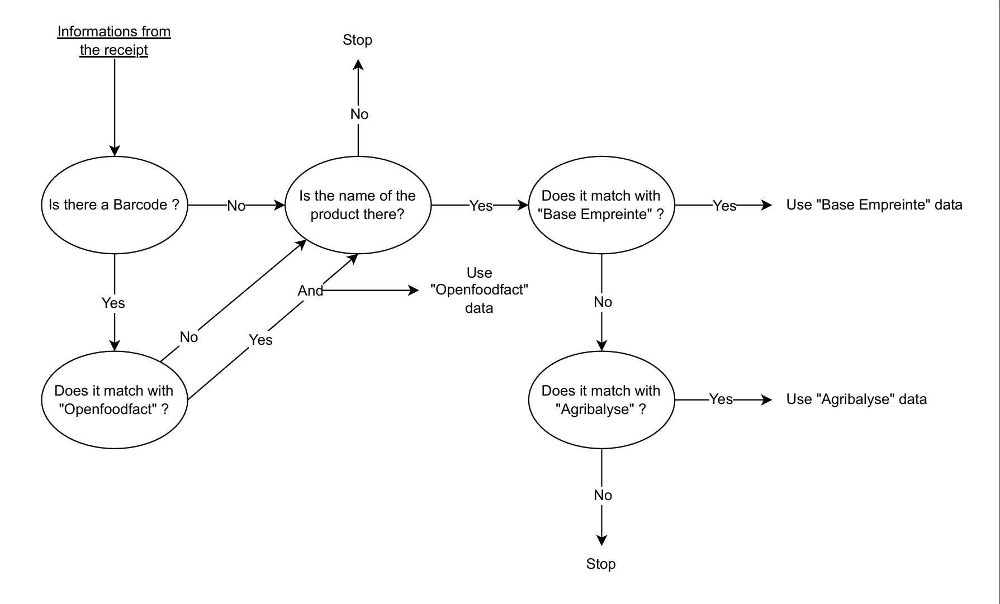
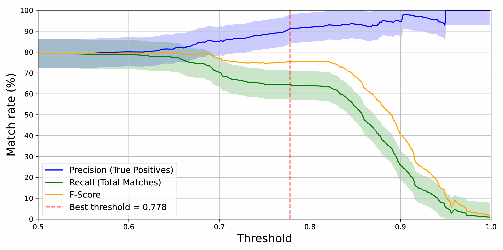

Mémoire - Carbon Calculator
Mémoire de fin d'études portant sur le développement d'un calculateur d'empreinte carbone intelligent. Le projet combine machine learning, analyse de données et interface utilisateur moderne pour sensibiliser aux enjeux environnementaux et proposer des solutions concrètes de réduction d'émissions.
Technologies
Python
Jupyter Notebook
PostgreSQL
scikit-learn
SnowballStemmer (NLTK Snowball)
pandas
numpy
matplotlib
spaCy (fr_core_news_md)
OpenRouteService API
SeaRoute
sqlite
Méthodologie
- Recherche bibliographique approfondie
- Collecte et analyse de données carbone
- Développement d'algorithmes ML
- Interface utilisateur intuitive
- Tests utilisateurs et validation
- Déploiement et monitoring

Limites et travaux futurs
Contributions et Innovation
Résultats & Performances
